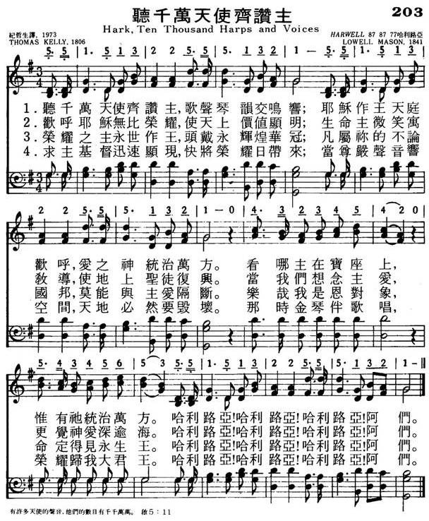

1213 216 Hark! Ten Thousand Harps and Voices 听千万天使齐赞主 NP203
|
|
|
1 Hark! ten thousand harps and voices
Sound the note of praise above;
Jesus reigns and heav'n rejoices,
Jesus reigns, the God of love.
See, He sits on yonder throne;
Jesus rules the world alone.
Refrain:
Alleluia! Alleluia! Alleluia! Amen.
2 Sing how Jesus came from heaven,
How He bore the cross below,
How all pow'r to Him is given,
How He reigns in glory now.
'Tis a great and endless theme--
O, 'tis sweet to sing of Him. (Refrain)
3 Jesus, hail! Thy glory brightns
All above and gives it worth;
Lor of life, thy smile enlightens,
Cheers and charms Thy saints on earth.
When we think of love like Thine,
Lord, we own it love divine. (Refrain)
4 King of glory, reign forever!
Thine an everlasting crown.
Nothing from Thy love shall sever
Those who Thou hast made Thine own:
Happy objects of Thy grace,
Destined to behold Thy face. (Refrain)
5 Savior, hasten Thine appearing;
Bring, O bring the glorious day,
When, the awful summons hearing,
Heav'n and earth shall pass away.
Then, with golden harps, we'll sing,
"Glory, glory,to our King!" (Refrain)
Source: Hymns for the Living Church #172 |
聽千萬天使齊讚主，歌聲琴韻交鳴響；
耶穌作王天庭歡呼，愛之神統治萬方。
看哪，主在寶座上，惟有祂統治萬方。
哈利路亞！哈利路亞！哈利路亞！阿們。
歡呼耶穌無比榮耀，使天上價值顯明；
生命主微笑寓教導，使地上聖徒復興。
當我們想念主愛，更覺神愛深逾海。
哈利路亞！哈利路亞！哈利路亞！阿們。
榮耀之主永世作王，頭戴永輝煌華冠；
凡屬你的不論國邦，莫能與主愛隔斷。
樂哉，我是恩對象，命定得見永生王。
哈利路亞！哈利路亞！哈利路亞！阿們。
求主基督迅速顯現，快將榮耀日帶來；
當尊嚴聲音響空間，天地必然要毀壞。
那時金琴伴歌唱，榮耀歸我大君王。
哈利路亞！哈利路亞！哈利路亞！阿們。 |



https://hymnary.org/page/fetch/WASH1957/79/high |
|
|
http://www.hymncompanions.org/Mar/13/stream.php
頌主作王
Hark！Ten Thousand Harps and Voices
聽哪！千萬琴韻悠揚，頌讚聲充滿天上，
主作王，天庭樂洋洋，主作王，神愛顯彰。
看哪！主坐寶座上，惟獨主統治萬方。
主耶穌，祢榮耀光芒，使天空美麗輝煌，
生命主以微笑教導，使大地聖徒歡暢。
當我們想念主愛，承認主愛無限量。
（副歌）
哈利路亞！哈利路亞！哈利路亞！阿們。
 (請點耳機收聽)
(請點耳機收聽)
司布真師母自壁爐中一根被烈火焚燒的橡樹枝得啟示：它在被燃燒時發出光、熱、和悅耳的聲音。 不經烈火，它祗是一根冷、硬的殘木。
苦難的火焰會使一個冷淡的基督徒火熱起來。
這首詩的作者是凱利（Thomas Kelly, 1769-1854）。 他父親是一個擁有莊園的愛爾蘭法官，他期望兒子能克紹箕裘。
凱利大學畢業後被送去倫敦攻讀法律，為了研讀法律文獻，他學會了希伯來文，有一天他讀到希伯來作家羅曼尼（William
Romaine）所著的「福音教義」（Evangelical
Doctrines），聖靈光照他；他在神面前認罪悔改，禁食禱告後，他發現法律不能將他從自己的罪性中釋放出來，祗有靠主寶血赦免，才可因信稱義。
於是他改讀神學，而不為父親所諒。凱利二十三歲時受當時的國教聖公會按牧，他竭立維護「因信稱義」的主張，與國教會發生爭議，主教禁止他講道。凱利離開聖公會後，成立愛爾蘭獨立教會，自己到處巡迴佈道，他講道有力，又擅歌唱。凱利雖遭他家人和教會反對，他仍百折不撓，奉獻他全副精神為主作工。
凱利夫婦熱心助人，經常雪中送炭，慷慨襄助四鄰窮人。 1847年，饑荒時期，約有百萬人餓死，他奔跑救助，不遺餘力。
他一生殷勤工作，除著作外，共作了765首聖詩，他的詩歌多數是充滿喜樂、讚美、信心和盼望。
1854年他中風癱瘓，垂危時，友人為他唸詩篇廿三篇「耶和華是你的牧者」，他說：「主是我的一切，願主旨意成全。」
本詩歌由梅遜（Lowell Mason, 見三月十四日）譜曲。

中英文聖詩集參考
英文歌名 Hark！Ten
Thousand Harps and Voices
頌主新歌 203
頌主新歌(中英雙語) 204
生命聖詩 145
聖詩 454
讚美 27


Thomas Kelly (1769–1855) Lowell Mason (1792–1872)
https://hymnary.org/text/hark_ten_thousand_harps_and_voices
Notes
Hark, ten thousand
harps and voices. T. Kelly. [Praise to Jesus.] First
published in his Hymns, &c, 2nd edition, 1806, in 7 stanzas of 6
lines, and headed with the text "Let all the angels of God worship Him." In
1812 it was included in his Hymns adapted for Social Worship, No.
7, but subsequently it was restored to the original work (edition 1853, No.
42). Its use is mainly confined to America, where it is given in several
collections, including Songs for the Sanctuary, 1865, &c. In most
cases it is abbreviated.
--John Julian, Dictionary
of Hymnology (1907)
https://blog.xuite.net/xmas2305/blog/17005807
一 聽哪！千萬聲音雷嗚，同聲高舉神羔羊；
萬萬千千立即響應，和聲爆發勢無量。
1 HARK! ten thousand voices crying, "Lamb of God" with one accord;
Thousand thousand saints replying, Wake at once the echoing chord.
二 讚美羔羊！聲音四合，全天會集來歌頌；
萬口承認，響亮協和，宇宙滿溢無窮頌。
2 "Praise the Lamb", the chorus waking, All in heaven together throng;
Loud and far each tongue partaking, Rolls around the endless song.
三 這樣感激心香如縷，永向父的寶座去；
萬膝莫不向子屈曲，天上心意真一律。
3 Grateful incense this, ascending, Ever to the Father's throne;
Every knee to Jesus bending, All the mind in heaven is one.
四 子所有的一切光輝，使父榮耀得發揮；
父所有的一切智慧，宣明子是同尊貴。
4 All the Father's counsels claiming, Equal honours to the Son;
All the Son's effulgence beaming, Makes the Father's glory known.
五 藉著聖靈無往不透，天人無數都無求；
圍著羔羊，喜樂深厚，稱頌祂作“自永有。”
5 By the Spirit all-pervading, Hosts unnumbered round the Lamb,
Crowned with light and joy unfading, Hail Him as the great "I AM".
六 現今新造何等滿足、安息、穩固並喜樂；
因著祂的救恩受福，不再受苦，不受縛。
6 Joyful now the new creation, Rests in undisturbed repose,
Blest in Jesus' full salvation, Sorrow now nor thraldom knows.
七 聽哪！天上又發歌聲，讚美聲音又四震；
穹蒼之中滿了“阿們！”“阿們！”因是同蒙恩。
7 Hark! the heavenly notes resounding, Higher swells the song of praise;
Through creation's vault responding, Loud Amens which joy doth raise.
達秘生於十九世紀初，那是一個關鍵的年代，由傳統、保守的世代，過渡到急速發展、觀念多元的世代。在那個時代中，相沿成習、積非成是的宗教，正受到嚴肅的考驗。所謂的高階批判學者、進化論者、其他各種異議論者，眾說紛云，撼動了許多人的信心。
然而，就在那個時候，神卻重用了一班祂所揀選的奴僕，作為轉移時代的人。他們為那一次所交付聖徒的真道，竭力爭辯。藉著他們，真理得以陳明，謊言歸於無用，神聖的經綸更往前進。
一八一五年，達秘全家遷居愛爾蘭，他也進入都伯林的三一學院求學。四年之後，他得到了學士學位，再專攻法律三年，二十二歲得到愛爾蘭律師公會會員的資格。那是一個令人稱羡、地位崇高，而且收入優渥的職務。
然而，達秘自十八歲起就注意到屬靈的事，清楚蒙恩之後，他的良心開始對他律師的業務提出異議，至終，他放棄了屬世通達的道路。親朋對他的抉擇，極不以為然，不過，達秘不是聖經中那位青年的財主，他欣然地捨棄一切，願出任何代價來跟隨主。
達秘最初在英國國教內任職，他的責任心強烈，為了照顧神的百姓，難得有一次是在午夜之前回到自己的茅蘆休息。直到有一次，他在旅途中不慎從馬背摔落，受了重傷，他才有較長的時間深思，長久以來所存在的一些問題。
他說：『在我孤獨時，經過內心的熟思，聖經的話完全得了優勢，使徒行傳給我一幅早期教會的圖畫，使我深覺那裡的情形和今日的光景大不相同』。
一八二七年，達秘和幾位年青人採取了一個勇敢的行動，就是在主日早晨一同擘餅，正如使徒行傳廿章第七節一般。他們決定忠心的實行神的話語，這是對傳統宗教作法最嚴厲的挑戰。
達秘後來辭去了牧師的職分，也明白的表示，他並未放棄神話語的職事，也未推卸拯救靈魂的責任。他從二十八歲開始，直到八十二歲離世，其間不斷地寫作、講道，述及聖經各種的問題。
達秘最著名的工作，乃是將整本聖經繙譯成德文和法文，並將希臘文新約繙譯成英文。直到今日，「達秘譯本」仍是極重要的聖經譯本，而他所作的「聖經略解」，也是讀經之人不可或缺的參考書籍。
達秘的學問雖然高大，但他的謙卑卻更為顯著，即使多受艱難，也樂於忍受。他勞苦的果效也一直隨著他，正如他墓碑上所銘刻的：『似乎不為人所知，卻是人所共知的』。
「聽哪，千萬聲音雷鳴」這首詩歌是他在一八三五年所寫的，那時他患病甚重，困居斗室，用口傳述這首詩。可是，詩意卻完全看不出他在病痛之中，只有無限的喜樂、榮耀，和不盡的讚美。
這首詩的語氣是向著人唱，其實是向著神去的。正是啟示錄第四、五章，主升天之後宇宙的光景：千萬聲音在那裡大聲說：「曾被殺的羔羊，是配得權柄、豐富、智慧、能力、尊貴、榮耀、頌讚的」，聲音未歇，「在天上、地上、地底下、滄海裡、和天地間一切所有被造之物」，萬萬千千立即響應！
「讚美羔羊！」「讚美羔羊！」聲音又四震，父、子、聖靈同得榮耀，新造滿足、安息、喜樂並穩固！穹蒼之中滿了「阿們」，「阿們」因是同蒙恩。這樣的讚美，要直到永世！
今天，我們向主唱這首詩的人要意會，神是向那些愛祂、守祂誡命的人，守約施慈愛。在現今的世代中，不論廉價販售神的話語，或是屈就犧牲神的真理，都是與祂的旨意背道而馳的。
今日，我們要做神聖經綸的忠信者，惟有不打折扣的實行聖經真理；要成為蒙神稱許的得勝者，只有不計代價做主的跟隨者！而今我們所付的代價、所受的苦楚，與那日所要顯與我們的無限榮耀，卻是永遠無法相比擬的。
https://hymnary.org/text/hark_ten_thousand_harps_and_voices
Hark, ten thousand harps and voices. T. Kelly. [Praise to
Jesus.] First published in his Hymns, &c, 2nd edition, 1806, in 7
stanzas of 6 lines, and headed with the text "Let all the angels of God worship
Him." In 1812 it was included in his Hymns adapted for Social Worship,
No. 7, but subsequently it was restored to the original work (edition 1853, No.
42). Its use is mainly confined to America, where it is given in several
collections, including Songs for the Sanctuary, 1865, &c. In most cases
it is abbreviated.
https://wordwisehymns.com/2014/02/19/hark-ten-thousand-harps-and-voices/
Hark, ten thousand harps and voices
The present hymn deals with the Lord Jesus Christ as He is at the present
time, seated upon His Father’s throne (Rev. 3:21), at His right hand (Rom. 8:34;
Heb. 1:3), and worshiped by the angels of heaven. The original inspiration for
the hymn was Hebrews 1:6, “Let all the angels of God worship Him.” (This text,
in turn, is a version of Psalm 97:7, which says, “Worship Him, all you gods [or
angels].”)
Other passages in Revelation seem to be alluded to in the hymn. For example:
“I heard the sound of harpists playing their harps. And they sang as it were
a new song before the throne” (Rev. 14:2-3). Or in another place:
“Then I looked, and I heard the voice of many angels around the throne, the
living creatures, and the elders; and the number of them was ten thousand times
ten thousand, and thousands of thousands, saying with a loud voice: ‘Worthy is
the Lamb who was slain to receive power and riches and wisdom, and strength and
honour and glory and blessing!’ And every creature which is in heaven and on the
earth and under the earth and such as are in the sea, and all that are in them,
I heard saying: ‘Blessing and honour and glory and power be to Him who sits on
the throne, and to the Lamb, forever and ever!’ Then the four living creatures
said, ‘Amen!’ And the twenty-four elders fell down and worshiped Him who lives
forever and ever” (Rev. 5:11-14).
(CH-1) Hark, ten thousand harps and voices
Sound the note of praise above!
Jesus reigns, and heav’n rejoices,
Jesus reigns, the God of love;
See, He sits on yonder throne;
Jesus rules the world alone.
Hallelujah! Hallelujah!
Hallelujah! Amen!
2) Well may angels, bright and glorious,
Sing the praises of the Lamb;
While on earth, He proved victorious;
Now He bears a matchless name.
Well may angels sing of Him:
Heav’n supplies no richer theme.
Though we will one day stand in the presence of the Lord, in glorified
resurrection bodies, we can approach the throne of grace now, through faith. The
hymn invites us to do just that.
CH-3) Come, ye saints, unite your praises
With the angels round His throne;
Soon, we hope, our God will raise us
To the place where He is gone.
Meet it is that we should sing,
Glory, glory, to our King!
Another thing that can give believers great joy is rehearsing the gospel story,
and meditating on the matchless grace that brought the Lord Jesus from the
glories of heaven to be our Saviour (cf. II Cor. 8:9).
CH-4) Sing how Jesus came from heaven,
How He bore the cross below,
How all power to Him is given,
How He reigns in glory now.
’Tis a great and endless theme
O, ’tis sweet to sing of Him.
CH-6) Saviour, hasten Thine appearing;
Bring, O bring the glorious day,
When, the awful summons bearing,
Heav’n and earth shall pass away;
Then with golden harps we’ll sing,
“Glory, glory to our King!”
Questions:
1) Kelly says, “heaven supplies no richer theme” for praise than the Person and
work of Christ. What are some things about the Lord Jesus that will motivate
praise?
2) What will be the difference between the praise offered by the angels, and
that offered by the saints?
https://hymnstudiesblog.wordpress.com/2009/01/24/quothark-ten-thousand-harpsquot/
"HARK! TEN THOUSAND HARPS"
"And I beheld, and I heard the voice of many angels…And the number of them was
ten thousand times ten thousand, and thousands of thousands" (Rev. 5:11)
INTRO.:
A hymn which praises Jesus Christ as the King to whom ten thousand times
ten thousand and thousands of thousands of angels sing is "Hark! Ten Thousand
Harps." The text was written by Thomas Kelly, who was born at Kellyville, Stradbally in Queens County, Ireland, on July 13, 1769. The son of Judge Thomas
Kelly of the Irish Court of Common Appeals, he attended Trinity
, from which he received the B. A. in 1789, and planned to become a lawyer, but
after converting to Christ he changed his plans and chose the ministry. In 1792
he became an Anglican (Irish Episcopal) minister, but because of his evangelical
preaching and work, which the archbishop did not approve and in fact actually
prohibited, he eventually left the established church and identified with a
group of "dissenting" ministers, establishing independent congregations in Athy,
Portarling, and Wexford. A fine classical scholar and the author of over 760
hymns, he published several works, including A Collection of Psalms and Hymns
Extracted from Various Authors in 1802, Hymns on Various Passages of
Scriptures in 1804, and Hymns not before Published in 1815.
Originally entitled "Let all the angels of God worship Him" with seven stanzas,
"Hark! Ten Thousand Harps" first appeared in the second edition of his Hymns on
Various Passages of Scripture which came out in 1806. Some of his other hymns
that have appeared in our books include "Look, Ye Saints! the Sight is
Glorious," "Praise the Savior, Ye Who Know Him," and "The Head that Once Was
Crowned With Thorns." Kelly died at Dublin, Ireland, on May 14, 1855. The tune
(Harwell) was composed for this text and the "Hallelujahs" and "Amens" were
added both by Lowell Mason (1792-1872). The melody is dated 1840 and was first
published in Mason’s 1841 Carmina Sacra. Among hymnbooks published during the
twentieth century by members of the Lord’s church for use in churches of Christ,
the song appeared in the 1921 Great Songs of the Church (No. 1) edited by E. L.
Jorgenson. Today it may be found in the 1994 Songs of Faith and Praise edited by
Alton H. Howard. The tune was used with an altered version of the hymn "Hark!
The Gospel Bells Are Ringing" by S. Wesley Martin in the 1963 Christian
Hymnal edited by J. Nelson Slater.
The song is a paean of praise to our Lord who rules the world alone.
I. Stanza 1 focuses on the reign of Jesus
"Hark! ten thousand harps and voices Sound the notes of praise above;
Jesus reigns, and heaven rejoices, Jesus reigns, the God of love.
See, He sits on yonder throne; Jesus rules the world alone."
A. Some object to making references to "harps" in hymns; however, the book of
Revelation definitely pictures the use of harps as a symbol, and whatever it
means by that symbol we ought to be able to sing and mean the same thing: Rev.
14.1-2
B. The reason why these harps and voices are sounding the note of praise above
is that Jesus reigns: Rev. 11.15
C. We know that Jesus rules because He sits on the throne with His Father: Rev.
3.21
II. Stanza 2 focuses upon the glory of Jesus
"Come, ye saints, unite your praises With the angels round His throne;
Soon, we hope, our God will raise us To the place where He has gone.
Meet it is that we should sing, Glory, glory to our King!"
A. The Bible pictures the angels as worshipping the Son: Heb. 1.6
B. Because of what the Son has done for us, we hope that God will raise us: 1
Cor. 6.14
C. Therefore, to Him should be blessing and honor and glory and power: Rev.
5.12-13
III. Stanza 3 focuses upon the sacrifice of Jesus
"Sing how Jesus came from heaven, How He bore the cross below,
How all power to Him is given, How He reigns in glory now.
‘Tis a great and endless theme–O, ’tis sweet to sing of Him."
A. Jesus left heaven and became obedient to the death of the cross: Phil. 2.6-8
B. Therefore, all power has been given to Him: Matt. 28.18
C. This is one of the reasons why we sing with grace in our hearts to the Lord:
Col. 3.16
IV. Stanza 4 focuses upon the love of Jesus
"Jesus, hail! whose glory brightens All above and gives its worth;
Lord of life, Thy smile enlightens, Cheers, and charms Thy saints on earth.
When we think of love like Thine, Lord, we own it love divine."
A. Jesus is God the Son, and He gives all above its worth for He is worthy:
Rev. 4.11
B. Because He is Lord of life, His smile enlightens, cheers, and charms the
saints on earth, especially when they are suffering and in need of patience:
Rev. 13.10
C. The saints are willing to suffer because they own His love which washed them
from their sins in His own blood to be divine: Rev. 1.5
V. Stanza 5 focuses upon the grace of Jesus
"King of glory, reign forever! Thine an everlasting crown.
Nothing from Thy love shall sever Those whom Thou has made Thine own:
Happy objects of Thy grace, Destined to behold Thy face."
A. Jesus wears the crown that symbolizes the fact that He reigns forever: Rev.
19.12
B. His love is such that nothing shall sever those who love Him from it: Rom.
8.38-39
C. Thus our faith and hope are rooted in the grace of our Lord Jesus Christ:
Rev. 22.21
VI. Stanza 6 focuses upon the coming of Jesus
"Savior, hasten Thine appearing; Bring, O bring the glorious day,
When, the awful summons hearing, Heaven and earth shall pass away.
Then with golden harps we’ll sing, ‘Glory, glory to our King!’"
A. Jesus Himself often referred to "the last day": Jn. 12.48
B. That day will summon the heaven and the earth to pass away: 2 Pet. 3.10
C. Yet, at that time the righteous will join those who are pictured with the
golden harps to sing eternal praise to the King: Rev. 15.1-2
CONCL.:
The refrain, added by Mason, simply concludes each verse by adding a final note
of praise.
"Hallelujah! Hallelujah!
Hallelujah! Amen."
In Hymns of Our Faith, William J. Reynolds wrote, "In Our Hymnody [Robert G.]
McCutchan writes: ‘The Joint Commission charged with compiling the Methodist
Hymnal, 1935, not always wisely softened all the "Hallelujahs" into "Alleluiahs."
Sometimes a Methodist feels the need of shouting "Hallelujah!"’ This goes for
Baptists, too!" And, one might add, singing "Hallelujah!" goes for New Testament
Christians as well. As we think about the power and glory that our Lord
possesses, we should want to join with the angelic hosts in their praise as we
listen with our mind’s ear to the book of Revelation and "Hark! Ten Thousand
Harps."
http://www.cclw.net/other/sbc/srysg2/htm/chapter10.html
汤姆斯·凯立小传
Thomas Kelly (1769–1855)
在诗歌史上，汤姆斯·凯立的名声，几乎直逼比他早半个世纪的查理卫斯理。虽然他们相处在不同的时代里，但每当我们唱他们所写的诗歌时，总是觉得这些诗是在永远常新的十字架之下写的，都是被神羔羊大爱激励而发出的心声。不只是他们俩人如此，其实我们可以从诗歌史上发现一条定律：最卓越的教会诗人，往往是诞生在圣灵水流最激荡最壮阔的时代里。当神的教会要往前时，最阻拦神的见证的，往往是已经成形的宗教世界，但是清心跟随主的子民从不委屈神的见证而有所妥协，他们注视升天掌权基督的荣耀，而力抗宗教世界。这些争战与神家的属灵前途息息相关，每每进行到最炽烈、最危急的关头时，神的子民是凭什么而得胜呢？乃是赞美！他们口唱新歌、仰望羔羊，就脚踩蛇蝎，击溃仇敌在宗教世界里发酵的势力。
因此，每一位诗人身上，都有这个特点：他们注视十架得胜羔羊、升天得荣基督，仇敌权势在他们眼目中如同无有。凯立就是这样的一位诗人，他一生忠诚跟随主，从不与宗教权势妥协，然而今天我们唱他的诗歌时，却一点也闻不到七倍烈窑的火燎味，而是四溢基督的馨香！
钉十架的基督定夺了他的一生
诗人凯立，于一七六九年七月，出生在爱尔兰皇后郡的盖力卫尔(Kellyville in Queen's
County)。他的父亲是爱尔兰法院的法官，所以他从都柏林大学毕业时，就有意献身法津。但是神在他身上有祂的美好的计划，就在他面临抉择时，扭转了他一生的道路。
当他在研读法津文献时，为了追本溯源，他居然学会了希伯来文，这样他就可以涉猎古代，如闪族的法律。当时他所用的一本希伯来文汇编的作者——罗曼尼(William
Romaine)是一位敬虔人，凯立因着对他发生兴趣，就读起他的另一本着作一一福音教义(Evangelical
Doctrines)，圣灵也藉着这本书的信息，在他里头工作，光照他，叫他在神面前切实地认罪悔改了。
如今活着乃是基督活在里面
凯立知道他的罪，被主宝血洗净了；但他马上发现，他并不能从罪恶的权势下释放出来，他对他自己的光景仍然满了烦躁不安。他自己专攻法律，更叫他明白：在神的完全律法之下，他只有被定罪的份。怎么办呢？年轻的凯立，就尽力改革自己，但严厉地对待自己，不时地禁食祷告，好象一个禁欲主义者一样。他以为只要藉着这些善功，除去邪情私欲，就可以讨神的喜悦了。过了一段时间，他和保罗一样，才发现原来他整个人里面，根本就没有良善，罪就调在他的性情里面，他真是苦啊！直到这时，神的光才照亮他：主钉十架，不但流出血来，叫他的罪得赦免；而且主的身子，也舍了，替他承受律法的咒诅。因此，乃是因信接受这份恩典，才能叫他在神面前称义的，而非靠着他的行为，或任何善功。下面有两首诗最足以诠释他此时所蒙属灵的大转机：
恩典——最甜天籁(Grace is the Sweetest Sound)
(一)竟然绕我们楣，恩典——最甜天籁。
良心控告、公义蹙眉，惟它驱我惊骇。
(二)它是亮光自由，释放罪律囚奴，
填墓威势，恩典除透，夸胜死亡阴府。
(三)心灵贫户！恩典乃是敞开宝库，
涌出奇妙医治活泉，永远你心内住。
(四)我们尽唱恩典——喜乐、奇妙题目，
恩典先沐，荣耀随满，与主同王永远。
上面一首说到恩典，下面一首则说到十架的救赎：
赞美救主，顺服至死(We Sing the Praise of Him Who Died，1815)
(一)赞美救主，顺服至死，死于咒诅十架，恩深；
世人轻蔑，我却注视，并将世界当作有损。
(二)十架如嵌金句辉煌：“神就是爱”，荧荧可见；
神的羔羊既挂木上，裂天倾下旷世恩典。
(三)十架除去我们罪担，蛰睡心灵得以苏醒；
每一苦杯变为甘甜，盼望满怀，雀跃死荫。
(四)怯懦灵魂，今得刚毅，软弱膀臂，争战奋兴；
十架扫空墓中惊惧，死床之上铺设光明。
(五)化除咒诅，保证主爱，十架流出生命恩膏，
在此，罪人避难所在，在天，圣徒赞美所绕。
握有绝对权柄的主，为着祂家中的需要，就在短短的时间之内，把“重生得救”，和“从律法中得自由”两层经历，扎实地作在凯立里面，不但叫他享受了在基督里的平安，也夺了他的心，视基督为至宝，一生忠诚服事祂。
蒙召跟随羔羊点燃复兴的火
一七九二年，诗人二十三岁，他决定答应主的呼召，放下律师的锦绣前程，一生单一来服事主。起先，他被爱尔兰的国立教会按立为传道人。当时爱尔兰教会的光景非常死沉，很少传讲福音。诗人既被主爱激励，就非常不满于现状，要起来传福音。主也量给他另外一位同伴——希尔(Roland
Hill)弟兄，跟他有同样的负担和感觉，俩人交通以后，就决定不顾一切压制，为主往前。
他就开始每个主日下午在都柏林传福音信息。他的灵炙热如火，马上就点燃起弟兄姊妹向主的心。这种热切要主的光景，叫那些愚民高枕的牧师，坐立不安，嫉妒他们，想法子要除掉他。他们所带来的震撼力，不只是震动了宗教领袖，主要是暴露了国立教会组织的根本错谬——用世界的利益、方法和原则，来组织严密的宗教，或许能塞住人的宗教需求，但绝对不能满足神，而且这种组织发展成为一道雄厚的城墙，阻拦了神见证的往前，并扑灭所有圣灵的火苗。
因此，这个复兴的火才点燃不久，它的影响力就在神的儿女中间很快地蔓延开来，国教领袖们就“合城不安”。有的人说，他太疯狂了；有的人说，他的话太属灵兮兮，不符合社会需要；有的人说，他讲道太不婉转了；有的人说，像他这样爱主太枉费了，会叫教会失去许多世上的好处。许许多多的声浪，虽然说法不同，却汇成一种声音，就像是主受审的那天，听汇成的那个声音：“除掉祂！除掉祂！除掉祂！”最后，都柏林的总主教浮乐(Dr．Fowler)也亲自去听他讲道，问明了他所根据的教义原则后，就决定：开除他和希尔俩人，而且所有都柏林地区的讲台都向他们关闭！
经历基督羞辱而持定升天基督
他们俩人毫不妥协地离开了国教。国教虽然向他们关闭，但主的门却是无人能关的。他们离开后，灵更高昂自由，因为他们可以按着主给他们的话语，完全释放出来，没有人的顾忌，和组织的辖制。当时，国教以外的独立教会，仍有向他们开门的，他们可以自由地传信息。此外，他自己也在都柏林一带建立好几处聚会，在神的儿女中间辛勤地牧养他们。
虽然如此，这种与宗教权势之间争战的经历，仍叫他受尽许多十字架的苦难，使他深深地体会到什么是基督的羞辱。他是一个真为主受苦的人，绝对不为自己求什么利益和地位，完全为神的儿女摆上。十字架在他身上，不是一个名词，乃是一个实际，一个生命。藉着进入主的苦难，他也进入了主升天得荣的境界。那一位得胜掌权的羔羊，一直是他一生的注视，叫他荣上加荣逐日变化，像从主的灵变成的。这一点是他诗歌最突出的特征，也是他许多诗歌的主题和灵感的泉源。他的代表作如下：
从前那戴荆棘的头(Thy Head，Once Crowned with Thorns，1820)(见第124首)
(一)从前那戴荆棘的头，今戴荣耀冠冕；
救主耶稣，我们元首，祢今已升高天。
(二)祢是地上圣徒之乐，祢是天上之光；
祢今领我饮于爱河，使我知其深广。
(三)主，将祢的羞辱、权柄，一并赐给我们；
地虽否认祢的微名，神却使祢高升。
(四)凡肯与祢在世同苦，也要同荣在天；
所以求主使我坚固，鄙视世界恩典。
(五)十架于祢虽是辱、死，在我却是恩典；
也是我的荣耀、权势，我的永远安宁。
这首诗歌，是他诗中最有名的一首，这位曾经被杀、今却得荣的神羔羊，一直是他前头的喜乐，叫他一生欢然奔十架路程，视界被神的荣耀所充满。这首诗常在擘饼聚会中使用，而将整个聚会提到天的境界，吸引神的儿女在灵里伏视神的羔羊。
讲到十架道路这一方面的诗歌，还有一首非常杰出的：
主，接纳我们的诗歌(Lord，Accept Our Feeble Song)(见第201首)
(一)主，接纳我们的诗歌，虽然声音顶柔弱；
我们述说祢的恩笃，因祢是我们救主。
(二)因祢舍去荣耀、丰富，祢的信徒才得福；
祢变贫穷，叫祢信徒，因祢享荣耀、丰富。
(三)天堂有何使祢心厌？世界有何使祢羡？
因而祢就离天临世，孤单、凄凉直到死？
(四)祢在天上何等荣耀！祢在世上何萧条！
祢早已知此行艰难，只因爱我不计算。
(五)当我想到祢的良善，就不禁又喜又惭！
喜，因祢能这样爱好；惭，因我这样还报。
(六)但我们望那日快到，脱尽所有的阻挠；
那时我们进荣耀里，要照本分服事祢。
(七)现今我们等在这里，因这盼望受策励；
主，使我们活着为祢，直到天上同聚集。
神的羔羊，一直是他赞美的中心。他描写羔羊的升天得荣特别生动，好象使徒约翰一样，看见了天上一次又一次的异象，而写下了他的诗歌。下面几首诗歌都是这方面的：
看哪！圣徒，荣耀光景(Look，Ye Saints！the Sight is Glorious，1809)(见第119首)
(一)看哪！圣徒，荣耀光景：忧患之子得胜回，
赢得争战，宝座欢登，今得万膝齐拜跪：
“冠祂！冠祂！冠祂！冠祂！今得冠冕荣耀归。”
(二)耶稣得胜掳掠仇敌。天使争先来加冠；
祂登宝座能力无匹，穹苍回响羔羊赞：
“冠祂！冠祂！冠祂！冠祂！万王之王今加冠。”
(三)罪人昧于救主至尊，反以荆冕来相赠；
而今圣徒欢拥主身，归祂衔下颂祂名：
“冠祂！冠祂！冠祂！冠祂！宇宙满溢君王颂。”
(四)听哪！欢声响彻穹苍，声和嘹亮凯歌扬；
赞美耶稣荣耀至上，喜乐无穷荣耀彰：
“冠祂！冠祂！冠祂！冠祂！万主之主，王中王。”
这首诗描写主的加冠，非常生动。启示录里说，“祂头上戴着许多冠冕”，诗人在此至少提到了三顶冠冕。他特别点出荆棘冠，是三顶冠冕中最尊贵、最美丽的一顶，这顶冠冕赢得千万人的心来归祂！
还有一首也是描写主的升天的：
听啊，千万金琴争鸣(Hark！Ten Thousand Harps and Voices，1806)
(一)听啊！千万金琴争鸣，奏出天上赞美音，
耶稣掌权，诸天欢腾，神爱处处掳人心。
宇宙归心宝座固，权柄惟独归耶稣。
(二)歌颂救主如何降下，在地微行肩头重，
而今所有权柄赐祂，通行诸天荣耀中。
祂一生是我诗题，甘甜感觉惟在伊。
(三)祢的荣耀照亮诸天，并使一切焕然新，
祢的微笑在地缠绵，所有圣徒喜乐奔。
竟有“爱”使神化身，这爱神圣我永分。
(四)荣耀的王，永远救主，祢配加冕难述尽，
祢的子民既蒙血赎，谁能使与祢爱分？
恩典作我年岁冠，直到永远面对面。
(五)救主，求祢早日显现，得赎日到乐无比，
不但震地也要震天，可畏呼声四响起。
一路被提我欢唱：“荣耀归给我君王。”
凯立实在是认识主的人，他描写这位基督虽然升天，却仍带着人性调在地上圣徒的生活里。诗人也不让天使在赞美救主升天的事上，专美于前，他写了另一首诗，说明地上圣徒，比天使更能摸着宝座上基督的心：
颂赞声音何等难得(How Pleasant is the Sound of Praise)(见第85首)
(一)颂赞声音何等难得！所以应当无间时刻；
如果我们自甘缄默，石头也要说话相责。
(二)我们应当高声颂美那用己血买我们的；
祂替我们备尝死味，祂为我们费尽心力。
(三)此世有一特别诗歌，惟独蒙恩罪人会唱；
此外无人懂那音乐，因不知其意义之纲；
(四)天使虽能欢然承认怜悯如何由血洞晓，
但是他们不像我们能以证明这血功效。
(五)天使虽能赞美拜朝，说神是神，向神恭敬；
我们却能欢乐唱道：祂在宝座还带人性。
(六)哦，主，我们赞美那使祢来流血受死的爱；
但愿不久在天相值，向祢赞美，向祢敬拜。
认识“锡安”的宝贵而浇奠一生
表面上看来，凯立脱离组织庞大的国教，却去一些规模小而各自独立的教会服事主，似乎是一件很傻的事；其实则不然，诗人是真正认识教会意义的人。在他的诗歌中，他很喜欢以“锡安”作表号，来说明教会的属天、属灵的本质。他深深知道一件事，就是：神在他们清心跟随主的人身上，有那么厉害的剥夺，使得他们在人的眼中，似乎是微小薄弱的，但是在神的眼中，却完全不一样；因为神所要的，是与祂自己性情相匹配的、能够作祂真实见证的。因此，诗人不希奇、也不羡慕那高大却属地的“殿宇”，这些中看的事物，到了那一日，都要拆毁，一块石头不迭在另一块石头上。神所要的是“锡安”——就是一班显出属天性情的子民。下面这首诗说明凯立是有教会异象的人：
锡安雄踞，群山围绕(Zion Stands with Hills Surrounded，1806)
(一)锡安雄踞，群山围绕，四围火城是神能力，
击败仇敌狼狈遁逃，纵使君王群对立。
欢唱，锡安！荣耀命运在你前。
(二)最密友谊至终变质，天地震动也要易位，
母亲不再怜恤儿子，所有联结无不崩溃。
但神大爱，信实保惠在身边。
(三)为叫器皿更显透亮，或置烈窑加以试炼，
火中乍见一位人子，祂何珍惜眼瞳人。
以马内利，永远覆翼祂锡安。
主的再来，也是诗人赞美的题目，我们举他的一首诗为例：
那从以东来的，是谁(Who is this that Comes from Edom，1809)
(一)那穿殷红血溅衣裳，从以东来的，是谁？
宣告群奴今得释放，并得恩赐作礼馈。
独踹酒醡何壮哉！掳掠仇敌何豪迈！
(二)装扮华美，能力大广，阔步而行是救主！
祂是余民惟一异象，荣耀充满不他顾。
救赎之年来搭救，耶稣降临伸冤仇。
(三)祢的征衣为何溅血？乃因杀戮仇敌染，
不留一个没有消灭，不留余地需再残。
撒但荣华如扫地，权势已溃不再起。
(四)大能救主永远掌权，配得赎民昼夜颂；
血泪赢得头上冠冕，说明祢的救赎功：
祢民对头作脚凳，冕下膏油裹万民。
从祂十架伤痕流出对付仇敌的兵器
凯立不但是诗人，也是作曲家。他本人有极高的文学天赋，对圣经原文的修养也很深，他一生的经历，则更帮助他进入圣经的灵里，因此我们唱他的诗歌时，实在可以感受到真理、灵感和诗的感觉三全其美。他在牧会的时候，往往灵感一来，他就顺着感觉用诗歌发表出来。诗一写出来之后，就交给弟兄姊妹去唱，大家争相传颂，就不胫而走，流传到其它的教会去了；甚至从前反对他的人，也把他所写的诗收入他们的诗集里。
凯立自己是诗人，他也很爱收集别人所写的好诗。早在一八○二年他就编出第一本诗集给教会使用，以后他自己不断地有佳作发表。到了一八五三年所出的第七版诗集Hymns
on Various Passages of
Scripture中，他个人所写的诗，就有七百六十五首，到本世纪初年时，仍有八十七首广被众教会采用。特别是普里茅斯的弟兄们最爱唱他写的诗，大概是凯立本人有许多的经历，和弟兄会创始人达秘相同吧一一他们同是爱尔兰人，从都柏林三一学院毕业，原来都是攻法律的，因看见羔羊的异象而蒙召，一生和国教的权势争战；所不同的是凯立早生了半个世纪而已。
诗人睡了等候更美复活
诗人一生殷勤服事主，直到一八五四年，他八十五岁，有一天他正在传信息时，心脏病发作，他就倒在讲台上，翌年才睡在主里。当他弥留之时，弟兄们围绕他唱诗篇二十三——“耶和华是我的牧者”来扶持他；他听了就以微声说：“主是我的一切！”他临终前最后的一句话是：“不是我的意思，乃是祢的旨意得成就。”诗人带着一生争战而来的伤痕，去见他的主，而把争战的兵器一一诗歌——留给了后人。
最后，我们以他的一首晚祷歌Through the Day thy Love has Spared
Us作结，这个晚祷毋宁说是他一生睡了之前的祷告：
晚祷歌Through the Day thy Love has Spared Us
(一)白昼旅人因“爱”赶路，黑夜今到工将结；
漫漫长夜主作守护，不容仇敌扰安歇。
耶稣，大能保惠者，投身祢怀何甜妥。
(二)由地去天，清心客旅，暂居仇敌洞穴里，
若要躲过今生惊惧，惟有安稳主膀臂。
直到短昼如飞去，更美复活永安息。
|